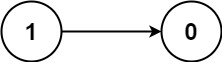
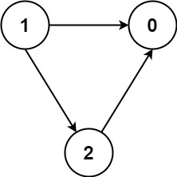

1462. 课程表 IV
n ≤ 100 直接跑 Floyd 传递闭包：把先修对放进布尔矩阵，三重循环逐个中转点把「u→k 且 k→v」连成「u→v」，查询直接查表。
思路
reach[u][v]表示 u 是 v 的先修课程；先把直接先修对填进矩阵。- 三重循环枚举中转点
k：reach[u][k] && reach[k][v]则reach[u][v] = true，跑完就是传递闭包。 - 每个查询
[u,v]直接读reach[u][v]，把 10⁴ 个查询都变成 O(1) 查表。
图解
最优解
1import java.util.*;2 3class Solution {4 public List<Boolean> checkIfPrerequisite(int numCourses, int[][] prerequisites, int[][] queries) {5 // reach[u][v]：u 是不是 v 的（直接或间接）先修课程6 boolean[][] reach = new boolean[numCourses][numCourses];7 for (int[] p : prerequisites) reach[p[0]][p[1]] = true;8 // Floyd 传递闭包：若 u 能到 k 且 k 能到 v，则 u 能到 v9 for (int k = 0; k < numCourses; k++)10 for (int u = 0; u < numCourses; u++)11 for (int v = 0; v < numCourses; v++)12 if (reach[u][k] && reach[k][v]) reach[u][v] = true;13 List<Boolean> ans = new ArrayList<>();14 for (int[] q : queries) ans.add(reach[q[0]][q[1]]);15 return ans;16 }17}题目
你总共需要上 numCourses 门课，课程编号依次为 0 到 numCourses-1 。你会得到一个数组 prerequisite ，其中 prerequisites[i] = [ai, bi] 表示如果你想选 bi 课程，你 必须 先选 ai 课程。
- 有的课会有直接的先修课程，比如如果想上课程
1，你必须先上课程0，那么会以[0,1]数对的形式给出先修课程数对。
先决条件也可以是 间接 的。如果课程 a 是课程 b 的先决条件，课程 b 是课程 c 的先决条件，那么课程 a 就是课程 c 的先决条件。
你也得到一个数组 queries ，其中 queries[j] = [uj, vj]。对于第 j 个查询，您应该回答课程 uj 是否是课程 vj 的先决条件。
返回一个布尔数组 answer ，其中 answer[j] 是第 j 个查询的答案。
示例 1：

输入：numCourses = 2, prerequisites = [[1,0]], queries = [[0,1],[1,0]] 输出：[false,true] 解释：[1, 0] 数对表示在你上课程 0 之前必须先上课程 1。 课程 0 不是课程 1 的先修课程，但课程 1 是课程 0 的先修课程。
示例 2：
输入：numCourses = 2, prerequisites = [], queries = [[1,0],[0,1]] 输出：[false,false] 解释：没有先修课程对，所以每门课程之间是独立的。
示例 3：

输入：numCourses = 3, prerequisites = [[1,2],[1,0],[2,0]], queries = [[1,0],[1,2]] 输出：[true,true]
提示：
2 <= numCourses <= 1000 <= prerequisites.length <= (numCourses * (numCourses - 1) / 2)prerequisites[i].length == 20 <= ai, bi <= numCourses - 1ai != bi- 每一对
[ai, bi]都 不同 - 先修课程图中没有环。
1 <= queries.length <= 1040 <= ui, vi <= numCourses - 1ui != vi
题面取自力扣当前版本。
数据快照 2026-11-04。题面版权归力扣所有，本站点仅供本人学习使用，请勿对外发布。